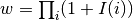
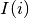
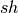
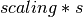

Overview¶
Note
This section assumes that you are familiar with running simulations using fwdpy. If not, this section will make no sense at all. This section is intended for those who want to build their own tools on top of fwdpy. This document should also be read top to bottom, as later material builds on earlier stuff.
One of the more important features of fwdpy is that you may extend it by writing your own plugins. By “plugin” I mean more than just some custom Python code to deal with output from the simulations. Rather, a plugin means some combination of Cython or new C++11 code that adds a feature that you need for your research.
Most plugins will only need to be written using Cython. I will take care to mention when a plugin would require new C++11 code. The goal is to make the latter case a very rare occurrence. As a programming language, Cython may be viewed as “Python with types”. In other words, consider the following Python funtion to add two numbers:
def add_em_up(x,y):
return float(x)+float(y)
Using Cython, such a function could take one of a few forms:
#As a Python function, but with the argument types specified:
def add_em_up(double x,double y):
return x+y
#As a function that is only callable as a C/C++ function
#elsewhere within a Cython module:
cdef double add_em_up_C_CPP(double x,double y):
return x+y
#As a function that can be called both from C/C++ and from Python:
cpdef double add_em_up_C_CPP_PY(double y,double y):
return x+y
A full overview of coding in Cython is beyond the scope of this manual–please see their documentation for more details. A quick overview is found here.
For most purposes, a plugin will consist of:
- A “cdef” function that works on some of the underlying C++ types
- A “def” function that will take objects from fwdpy and apply the “cdef” function to those objects.
The former is the “back end” of your plugin, and the latter is the Python interface that makes it useful.
Glossary¶
In one sense Cython is a “dialect” of Python, in that it augments Python with C and C++ data types. You may need to familiarize yourself with the basics:
- C data types defined
- A “return value” is the name of a type that is returned by a function. void = noting. Otherwise, something is returned.
- “const” is a keyword meaning “cannot be modified”, or constant. C++ code attempting to modify a const variable will fail to compile.
- “class” is a complex type. These are often composed of the fundamental types, such as C types. Alternately, they may be entirely new types defined by a library, such as those descbied below.
- “object” is an instance of type or class. In the following example, vector[int] is a class type, and x is an object whose type is vector[int]:
from libcpp.vector cimport vector
cdef vector[int] x
PS, you just learned how to bring C++’s vector class into scope using Cython.
File extensions¶
The Cython code for a plugin will go into a ”.pyx” file. This is known as a “Pyrex” file type, and Pyrex is the precuror to Cython.
Note
You will want to make sure that your text editor supports the .pyx and .pxd file extensions. Cython provides a plugin for Emacs. Casual Google searches find several options for the vi/vim family of editors. I have no idea what, if anything, is avaiable for OS X editors like BBEdit, TextWrangler, or Xcode. If you use them, you need to sort that out on your own. I use Emacs and vim because they work the same way on all systems and I can edit files remotely via SSH. For vim/neovim users, YouCompleteMe (with code completion enabled) is a truely spetacular way to edit Cython code–the code completion is quite cool. However, you are on your own installing it, as it is a bit tricky to get up and running.
For plugins that require extra C++ code, header files should have the .h or .hpp extension, and source files should have the .cc extension. You should avoid .cpp for the following reason: Cython will process a pyx file into a .cpp file. This behavior can have side-effects. IF you have Cython code in foo.pyx and some additional C++ code in foo.cpp, the latter file will be over-written when Cython compiles foo.pyx into a C++ file (which will be called foo.cpp)! Use .cc to avoid that.
Compiling a Cython-only plugin¶
This section describes the “easy way” to compile a plugin. This method only applies to plugins consisting only of Cython code (.pyx files).
I will assume that your module will be called “foo”.
You will need three files:
- foo.pyx contains your Cython code
- foo.pyxbuild contains extra info to tell the system that this plugin the C++11 language
- compile_foo.py is a Python script that will handle the compilation.
The contents of foo.pyx contain whatever code you need to write for your module.
foo.pyxbld contains the information needed to compile the plugin on the fly. fwdpy is capable of generating these files for you:
import fwdpy as fp
#Generate foo.pyxbld
fp.make_pyxbld('foo')
Note
If you are using the clang compiler, be prepared for a metric ton(ne) of compiler warnings. These warnings are from the Cython-generated C++ code.
Finally, compile_foo.py contains at least the following:
import pyximport
pyximport.install()
#This import command will process foo.pyx,
#generate a C++ source file based on it,
#and compile it! This only needs to happen once,
#and recompilation will only happen if you make
#changes to foo.pyx
import foo
Note
Your Python source file can do more than just compile the module. It could run simuations and apply your custom plugin code. Or, you could just have one script that imports a lot of modules to compile them.
Compiling a plugin that contains extra C++ code¶
TBD
The C++ types used in fwdpy¶
fwdpy is implemented in terms of the following:
- fwdpp, which is a C++11 library for forward simulation. It is the “guts” of fwdpy and does most of the harder work that needs to be fast.
- GSL, which is a C library for numeric computation. fwdpy and fwdpp use GSL for random number generation, fast lookup tables, etc.
- Cython is the glue between fwdpp, GSL, and Python.
- cythonGSL exposes the GSL to Cython so that we don’t have to reinvent all of those wrappers.
In order to write a plugin, you need all of the above installed on your system.
Let’s go through the fwdpp types used in fwdpy, and how to manipulate them in Cython.
I will give the names of header files where these types are defined. For fwdpp types, you may get all the gory details about them from that library’s manual.
The next sections go through the relevant C++ types in a “biological” order: mutation, mutation container, gamete, gamete container, diploid, etc. Finally, we discuss the population objects that hold all of these together.
Mutation types¶
popgenmut¶
This is the C++ name of the type of mutation used in fwdpy. It is a mutation type with the following data members:
- pos: the mutation position. This is a double-precision floating point number.
- s: the “selection coefficient” or “effect size”. This is a double-precision floating point number.
- h: The dominance term. This is a double-precision floating point number.
- neutral: A boolean (C++ type bool) that flags the mutation as “neutral” or “selected” (true and false, respectively).
- g: an unsigned (non-negative) 32-bit integer recording the generation when the mutation first appeared.
- label: this is a 16 bit unsigned integer. In practice, not much is done with it, but you can use it for adding 16 bits of extra info to a mutation type. It was given a name in order to make use of wasted storage in the C++ type.
This type is defined in the fwdpp header file fwdpp/sugar/popgenmut.hpp. It is exposed to Cython via fwdpy/fwdpp.pxd.
Let’s show how to access these data members in Cython. First, we will consider the case of simply assigning each data member to another variable. This is a pointless example, but it serves to illustrate some key concepts:
#We must bring popgenmut into scope
from fwdpy.fwdpp cimport popgenmut
#The "void" return type mean that the function does not return a value
cdef void do_something(const popgenmut & m) nogil:
cdef double s = m.s
cdef double h = m.h
cdef double pos = m.pos
cdef bint neutral = m.neutral
Key points:
- “nogil”: this function does not act on any Python objects. As a rule of thumb, declare such functions as nogil so that they may be used in parallel programming. See Cython docs for more info.
- “&”: this means that our function takes a “reference” to a popgenmut. Withouth the “&”, ‘m’ would be copied and then passed to do_something. That copy is unnecessary and expensive, and therefore incorrect!
- “const”: our function takes a const reference to a poppgenmut. The const means that we cannot try to modify any of the data members in m. Attempting to do so will fail to compile.
We can write non-const functions, too. But please be aware that this gives you the ability to manipulate the population data directly. In other words, doing the wrong thing can result in undefined behavior and crashes.
Here is a non-const function to change the selection coefficient:
from fwdpy.fwdpp cimport popgenmut
cdef void change_s(popgenmut & m, connst double news) nogil:
#We CAN modify m, because it is not const!
m.s = news
And, here is why the “&” matters:
from fwdpy.fwdpp cimport popgenmut
cdef void try_2_change_s(popgenmut m, const double news) nogil:
#m has been passed in as a COPY, and not as a REFERENCE.
#Thus, the COPY has its selection coefficent changed,
#which will not have any effect on the population being
#simulated
m.s=news
Mutation containers and mutation counts.¶
Defined in the fwdpy header “types.hpp”.
A population consists of a C++ vector of mutations. Functionally, this is very similar to the “list” type in Python.
In fwdpy, a vector of mutations goes by the name mcont_t (mutation container type), which refers to a vector of popgenmut objects.
A population consists of a second container containing the number of times each mutation exists in the population. This is a C++ vector of unsigned (e.g., non-negative) integers, and fwdpy uses the alias ucont_t for this type.
Key points:
- These two vectors are the same length.
- The order of elements in each vector is the same, in the sense that the number of occurrences of the i-th mutation is found in the i-th position of the counts container.
- In these vectors, elements are completely unsorted with respect to age, effect size, position, or anything.
Note
A mutation container contains both segregating mutations and extinct mutations. It is therefore important to skip over extinct mutations when calculating things!!! You may also want to check for, and skip, fixations. There are a few reasons for this, efficiency being one of them; fwdpp will “recycle” the extinct mutations to create new mutations. Further, the containers may or may not contain fixations. Most “standard” population genetic simulations will remove both neutral and selected fixations from these containers. Simulations of models such as Gaussian stabilizing selection around an optimum trait value (currently) retain fixations. The reason for this difference is that fixations in the standard model do not contribute to differences in relative fitness. But, in the Gaussian stabilizing selection models, they still contribute to mean trait value. Future versions of fwdpy may change the behavior of Gaussian selection models, removing fixations and simply keeping track of the sum of fixed effect sizes (at least for the case of additive models).
Fixations are stored in an mcont_t and the corresponding fixation_times are stored in a ucont_t.
Simulations also use a lookup table to quickly ask if a new mutation position already exists in the population or not. This lookup table vastly speeds up the implementation of infinitely-many sites mutation schemes. The C++11 type is:
std::unordered_set<double,KTfwd::equal_eps>
The alias for this type provided by fwdpy is lookup_t.
Note
It is very unlikely that you will ever need to access/manipulate a lookup_t directly. If you ever have the desire to add/remove from one, think carefully, and then think again. A lookup_t is modified when adding/removing mutations from the population. As a rule, this should not be done manually. Rather, you should use use functions like fwdpy.fwdpy.add_mutation().
We will save examples of processing these objects until the section on dealing with whole-population objects.
Gametes and gamete containers¶
Defined in the fwdpy header “types.hpp”, which refers to the fwdpp type defined in fwdpp/forward_types.hpp.
A gamete is a simple object. It contains the following data members:
- n is an unsigned integer representing how many diploids are referring to this exact copy of this gamete.
- mutations is a C++ vector of unsigned 64-bit integers. Each integer is an index referring to a location in the mutation container. This container is for neutral mutations only. In other words, the “neutral” value of each mutation must be “true”.
- smutations is the analog of mutations, but for “selected” mutations (e.g., those affecting fitness/trait values). The value of each mutation referred to has “neutral” set to “false”.
In C/C++, the unsigned 64-bit integer type is size_t.
Note
n is not equivalent to how many times a gamete exists in the population. fwdpp makes no attempt to represent each identical gamete once-and-only-once.
Note
The integers in mutations and smutations are sorted with respect to mutation position, in ascending order. Behind the scenes, fwdpp makes sure that this sorting order is maintained. It allows cool things like log-time lookup of mutations based on position, etc.
fwdpy exposes the name gamete_t to refer to this type:
from fwdpy.fwdpy cimport gamete_t
Gametes are stored in a C++ vector. The alias for this type is gcont_t:
from fwdpy.fwdpy cimport gcont_t
Again, we will save examples of processing these objects until the section on dealing with whole-population objects.
Diploids¶
Defined in the fdwpy header “types.hpp”. In fwdpp lingo, this is a custom diploid.
A diploid is a very simple C++ type with the following data members:
- first is a size_t (unsigned 64-bit integer) with is the location in a gamete container of the first gamete
- second is a size_t (unsigned 64-bit integer) with is the location in a gamete container of the second gamete
- g is a double-precision floating point value representing a “genetic” value
- e is a double-precision floating point value representing a “non-genetic” value. For example, random noise applied to a trait
- w is a double-precision floating point value representing fitness.
We have the following types:
#This is a diploid
from fwdpy.fwdpy cimport diplod_t
#This is a C++ vector of diploids
from fwdpy.fwdpy cimport dipvector_t
Population types¶
This is where the action is. A population is a C++ object containing the above data types.
singlepop_t¶
Defined in fwdpy header “types.hpp”. This class inherits from the fwdpp tempate type singlepop (fwdpp/sugar/singlepop.hpp).
This type is used to model the following situation:
- A single deme
- A contiguous genomic region. Mutation rates, recombination rates, etc., may vary along this region via the use of
fwdpy.fwdpy.Regionobjects.
from fwdpy.fwdpy cimport singlepop_t
It has the following data members:
- generation, an unsigned 32-bit integer representing the current generation. 0 is the starting value.
- N, an unsigned 32-bit integer representing current population size
- mutations, an mcont_t containing the mutations
- mcounts, a ucont_t containg the number of occurrences of each mutation
- mut_lookup, a lookup_t (see above).
- fixations, an mcont_t containing fixations
- fixation_times, a cont_t containing the fixation times.
- gametes, a gcont_t containing the gametes
- diploids, a dipvector_t containing the diploids.
singlepop_t and Python¶
“Under the hood”, a fwdpy.fwdpy.Spop is a wrapper around a singlepop_t. This type is a “Cython extension type”, and is a fundamental type in fwdpy. One uses containers of these types in the form of fwdpy.fwdpy.SpopVec.
We have to get a gory detail out of the way. A fwdpy.fwdpy.Spop contains a C++11 “shared pointer” to a singlepop_t. We’ll see the implications of this in the recipes below.
Recipes¶
Note
These recipes will start simply and quickly get advanced. They’ll show you what stuff from fwdpp is exposed to Cython and you’ll also see some that fwdpy defines that may be of use for your own plugins.
First things first: how to go from a fwdpy.fwdpy.Spop to a singlepopt_t in a plugin:
from fwdpy.fwdpy cimport singlepop_t
#A very boring plugin indeed!
cdef void my_plugin_function(const singlepop_t * pop) nogil:
pass
#This will be the function that your plugin exposes
#to Python:
def foo(Spop p):
#p is your Spop, pop is the shared pointer,
#and pop.get() returns the raw pointer
#to the singlepop_t
my_plugin_function(p.pop.get())
Count the number of segregating mutations in the entire population:
cdef unsigned count_muts(const singlepop_t * pop) nogil:
cdef size_t i=0
cdef size_t n = pop.mcounts.size()
cdef unsigned twoN = 2*pop.popsize() #This is a member function that returns pop.N
cdef unsigned extant=0
for i in range(n):
#Check that mutation is not extinct and not fixed
if pop.mcounts[i] > 0 and pop.mcounts[i] < twoN:
extant+=1
#return our count
return extant
Count the number of segregating neutral mutations in the entire population:
cdef unsigned count_neutral_muts(const singlepop_t * pop) nogil:
cdef size_t i=0
cdef size_t n = pop.mcounts.size()
cdef unsigned twoN = 2*pop.popsize() #This is a member function that returns pop.N
cdef unsigned extant=0
for i in range(n):
#Check that mutation is not extinct and not fixed and is neutral
if pop.mcounts[i] > 0 and pop.mcounts[i] < twoN and pop.mutations[i].neutral is True:
extant+=1
#return our count
return extant
Note
Counting the number of selected mutations would be the same, but checking for “neutral is False”.
Count the number of neutral and selected mutations per gamete, return a list of tuples to Python with that info.
from fwdpy.fdwpy cimport singlepop_t
#The next 2 cimports are from Cython's wrappers for the C++ standard library.
from libcpp.vector cimport vector
from libccp.utility cimport pair
#KEY: a C++ pair auto-converts to a Python tuple. A C++ vector auto converts to a list.
#So guess what a vector of pairs converts to?
#(A list of tuples)
#This is a helper function. It will count the number of segregating mutations
#in each gamete.
cdef int count_mutations(const vector[size_t] & keys,const ucont_t & mcounts,const unsigned twoN) nogil:
cdef size_t i=0
cdef size_t n=keys.size()
cdef int rv = 0
for i in range(n):
#Note this next line: the i-th element in keys is an index
#corresponding to a location in mcounts.
if mcounts[keys[i]] < twoN:
rv+=1
return rv
cdef vector[pair[int,int]] mutations_per_gamete(const singlepop_t * pop) nogil:
cdef vector[pair[int,int]] rv
cdef size_t i = 0
cdef size_t n = pop.gametes.size()
cdef unsigned twoN = 2*pop.popsize()
cdef int neutral,selected
#Now, we go through every gamete and:
#1. Check that it is not extinct
#2. Go over every mutation in each gamete and make sure that it is not fixed.
# We do not need to check that each mutation in each gamete has a nonzero count.
# fwdpp ensures that an extant gamete contains extant mutations.
for i in range(n):
if pop.gametes[i].n > 0: #gamete is not extinct
#"mutations" = container of indexes to neutral mutations
neutral = count_mutations(pop.gametes[i].mutations,pop.mcounts,twoN)
#"smutations" = container of indexes to selected mutations
selected = count_mutations(pop.gametes[i].smutations,pop.mcounts,twoN)
rv.push_back(pair[int,int](neutral,selected))
return rv
Count the number of neutral and deleterious mutations per diploid, and return a list of tuples:
cdef pair[int,int] count_mutations_diploid(const diploid_t & dip, const gcont_t & gametes, const ucont_t & mcounts, const unsigned twoN) nogil:
#Neat: we can re-use the function defined above:
cdef int neutral = count_mutations(gametes[dip.first].mutations,mcounts,twoN)
cdef int selected = count_mutations(gametes[dip.first].smutations,mcounts,twoN)
return pair[int,int](neutral,selected)
cdef vector[pair[int,int]] mutations_per_diploid(const singlepop_t * pop) nogil:
cdef vector[pair[int,int]] rv
cdef size_t i=0
cdef size_t n=pop.diploids.size()
cdef unsigned twoN = 2*n
cdef pair[int,int] temp
#Now, go through every diploid:
for i in range(n):
temp = count_mutations_diploid(pop.diploids[i],pop.gametes,pop.mcounts,twoN)
rv.push_back(temp)
return rv
Time to up the complexity level with the next examples.
Population mean fitness under a multiplicative model. We will calculate the mean fitness of the population by explicitly calculating the fitness of each diploid. We will make this calculation under a multiplicative model, , where  is  or  for hetero- and homo- zygous mutation positions, respectively.
Some comments:
- We will use fwdpp’s multiplicative_diploid class to do this calculation.
- We will use a numpy array to store the fitness of every diploid and retuirn the mean of the array as the calculation of mean fitness.
Thus, this example shows us how to:
import numpy as np;
from cython.view cimport array as cvarray
from fwdpy.fwdpp cimport multiplicative_diploid
cdef void wbar_multiplicative_details(const singlepop_t * pop, double[:] w, const double scaling) nogil:
cdef multiplicative_diploid wfxn
cdef size_t i=0, n=pop.diploids.size()
for i in range(n):
#Here is the trick. wfxn is a C++ class, but it is also a function!
#Further, it is a template function. Cython is not willing to just let
#the C++ compiler figure out the types here, so we have to explicitly use typecasts,
#which is what the <foo>bar is: type cast a bar to a foo. This has NO RUNTIME PENALTY!!!
#Yes, we also have to cast the scaling parameter, even though it is not a template parameter.
w[i] = wfxn(<diploid_t>pop.diploids[i],<gcont_t>pop.gametes,<mcont_t>pop.mutations,<double>scaling)
def wbar_mutiplicative(Spop p, const double scaling):
"""
This is our Python function.
"""
#Create the numpy array
w=np.array(p.popsize(),dtype=np.float64)
#Call our Cython function:
wbar_multiplicative_details(p.pop.get(),w[:],scaling)
#return mean fitness:
return w.mean()
Note
The above function is only useful if you run it on a population using the same “scaling” that you used to simulate!!! Otherwise, the values returned will differ from those used to evolve the populations.
fwdpy also provides an interface to the additive fitness calculation object from fwdpp. It has the same interface:
from fwdpy.fwdpp cimport additive_diploid
Some comments are needed:
- multiplicative_diploid and additive_diploid return non-negative doubles representing fitness.
- Thus, they are not suitable as object for calculating phenotypes.
We will return to phenotypes vs fitness later on, in the section on plugins providing custom fitness models.
Additional material¶
Between fwdpp and fwdpy, a lot of stuff is already implemented.
The following pxd files make various C++ functions available to plugins:
- fwdpy/fwdpp.pxd exposes a lot of fwdpp. Those functions are documented in that library’s manual.
- fwdpy/fwdpy.pxd defines a lot of the Cython extension classes and exposes types like singlepop_t, etc. This is the “main” pxd file for the package.
- fwdpy/fitness.pxd is the basis for fitness models and contains many cdef functions to aid writing custom fitness functions.
These pxd file will be viewed most easily at fwdpy‘s repo.
The Git repo fwdpy_plugins contains working plugin examples, including all of the above “recipes”.
Implementing custom fitness functions¶
This section covers how to write your own “fitness” functions. First, we cover important concepts. Then, we describe the set of functions that fwdpy provides to help implementing custom fitness models. Then, we work through some examples.
Please note that I’m using the term “fitness” here somewhat loosely, as sometimes such a function may be used to calculate a genetic value for a diploid, as in the case of simulations of quantitative traits.
Concepts¶
Types of fitness models¶
Fundamentally, there are two ways that these types of functions work:
- Fitness depends on whether or not a mutation is found in heterozyzous (Aa) or homozygous (aa) state in a diploid. We’ll call this a “site-based” fitness model.
- Fitness depends on properties of separate haplotypes, which are then combined into a single value for fitness. We’ll call these “haplotype-based” fitness models.
Types of fitness model objects¶
Further, if all we need to know about a diploid in order to calculate its fitness is what gametes (and therefore what mutations) a diploid contains, then our fitness model requires no extra data. Such a situation can be represented via a “stateless” object, one requiring no extra information about the population or its history.
fwdpy supports stateless fitness objects.
The relevant Cython extension types¶
These are defined in the source file fwdpy/fitness.pxd. The types are:
Custom types will be extensions of these base types. For example:
cdef class MyFitness(SpopFitness):
pass
Helper functions¶
fwdpy provides several “helper” functions to simplify writing custom fitness functions. These are defined in fwdpy/fitness.pxd, and that file is heavily commented.
In general, you’ll probably just want to import everything from the fitness module:
from fwdpy.fitness cimport *
To see how these functions are used, take a look at fwdpy/fitness.pyx, which is where the built-in fitness models are implemented. The built-in models are implemented using the machinery for implementing custom fitness models.
Stateless fitness objects¶
In C++, a fitness function for a single-deme simulation returns a float64 and takes a diploid_t, gcont_t, and mcont_t as arguments:
//This is the function pointer type representing a valid fitness function
double(*)(const diploid_t &, const gcont_t &, const mcont_t &)
Often, it is tedious to write such a full-blown fitness function. Also, fwdpp already has fast routines for “site-based” models. For this reason, fwdpy allows you to provide three simpler functions:
- A function that updates fitness when a mutation is Aa.
- A function that updates fitness when a mutation is aa.
- A function that returns the final fitness value.
The signature of the first two are:
void(*)(double &, const popgenmut &)
And the final function type is:
double(*)(double)
For “haplotype-based” fitness schemes, you need two functions:
//Take a haplotype, process it, and return some value
double(*)(const gamete_t &, const mcont_t &)
//Take the two haplotype values, and return a final value:
double(*)(double,double)
Stateless models are implemented in terms of the C++ class singlepop_fitness, exposed to Cython in fwdpy/fitness.pxd.
The file stateless_fitness_models.pyx that comes with fwdpy_plugins shows working examples of implementing the standard additive fitness model several different ways. The contents of that file are:
#Example of plugins implementing "stateless" fitness models
#We will implement the standard additive model several different
#ways, plus one haplotype-based model
#The additive model of fitness is 1+sum(g_i), where g_i is sh
#for Aa genotypes and 2s for aa genotypes.
#The additive model of a trait value would simply be sum(g_i),
#and therefore the "return fitness" function matters:
from fwdpy.fitness cimport *
from libcpp.memory cimport unique_ptr
cdef extern from "<algorithm>" namespace "std" nogil:
T max[T](T,T)
#First, we'll implement the additive model
#by writing functions that process Aa and aa
#genotypes at each site and then return a final fitness
#value
#This function is how fitness is updated for heterozygous (Aa)
#genotypes
cdef inline void additiveAa(double & w, const popgenmut & m) nogil:
(&w)[0] += (m.h*m.s)
#This function is how fitness is updated for a homozygous genotype
cdef inline void additiveaa(double & w, const popgenmut & m) nogil:
(&w)[0] += (2.0*m.s)
#For additive models, we can simply return 1+w.
#If we wanted additivity for a quantitative trait,
#then this function would return w, to
#center the value at an average trait value of 0.
cdef inline double return_fitness(double w) nogil:
return max[double](1.0+w,0.0)
#Now, we construct our custom fitness class,
#which can be used as a fitness model in a simulation
cdef class CustomAdditive1(SpopFitness):
def __cinit__(self):
self.wfxn = unique_ptr[singlepop_fitness](new singlepop_fitness(additiveAa, #Pass in the "Aa updating fxn"
additiveaa, #The "aa updating fxn"
return_fitness, #The fxn to return the final fitness value
0.0)) #The initial value for fitness
#See fwdpy/fitness.pxd and fwdpy/fitness.pyx for how additive & multiplicative fitness models are implemented in fwdpy
#Now, let's implement it as a more complex function representing the full signature of a fitness function:
#import fwdpp's function object for calculating additve effects over sites:
from fwdpy.fwdpp cimport additive_diploid
cdef inline double additive_fitness_fxn1(const diploid_t & dip, const gcont_t & gametes, const mcont_t & mutations) nogil:
#Create an additive_diploid object:
cdef additive_diploid a
return a(dip,gametes,mutations,2.0)
cdef inline double additive_fitness_fxn2(const diploid_t & dip, const gcont_t & gametes, const mcont_t & mutations) nogil:
#Use the wrapper around fwdpp's site_dependent fitness
#defined in fwdpy/fitness.pxd:
cdef site_dependent_fitness_wrapper wrapper
#call it like a function, passing our cdef functions from above:
return wrapper(dip,gametes,mutations,additiveaa,additiveAa,return_fitness,0.0) #Note that additiveaa is passed in b4 additiveAa. Yes, this is inconsistent w.r.to above, but it matches the fwdpp interface for site_depdendent_fitness.
#Now we can define two new additive fitness models:
cdef class CustomAdditive2(SpopFitness):
def __cinit__(self):
self.wfxn = unique_ptr[singlepop_fitness](new singlepop_fitness(additive_fitness_fxn1))
cdef class CustomAdditive3(SpopFitness):
def __cinit__(self):
self.wfxn = unique_ptr[singlepop_fitness](new singlepop_fitness(additive_fitness_fxn2))
#Finally, let's define additive fitness as the sum of the sums of selection coefficients on each
#hapltype. Note that this explicitly assumes h=1!!!!
#We will use functions from fwdpy/fitness.pxd in order to get the job done:
cdef double add_hap_effects(double a,double b) nogil:
return max[double](1.0+a+b,0.0)
cdef class CustomAdditive4(SpopFitness):
def __cinit__(self):
self.wfxn=unique_ptr[singlepop_fitness](new singlepop_fitness(sum_haplotype_effects,add_hap_effects))
Examples¶
More examples of stateless custom fitness functions are found in the repo fwdpy_plugins. The examples are kept in a different source repo for a few reasons. First, it is easiest to have a repo that we can test instead of static documentation that may drift from reality. Second, compiling plugins required that fwdpy be installed and that the plugin code is not in the fwdpy repo.
 in simulations of quantitative traits.
in simulations of quantitative traits.